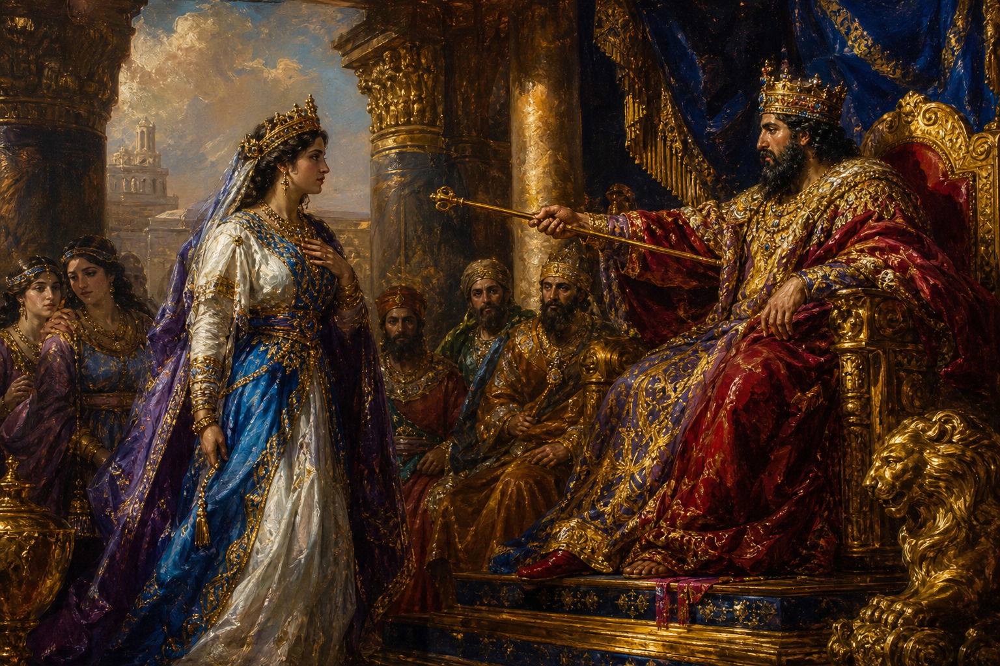

Old Testament · Book 17 of 39
Esther
A Jewish orphan becomes queen of Persia, and in the one book of the Bible that never mentions God by name, his hidden hand saves a whole people through her courage.
Esther is set among the Jews who remained scattered across the Persian Empire after the exile, far from Jerusalem and seemingly far from any visible sign of God. Yet beneath a story of palace intrigue, a beauty contest, and a villain's plot runs a quieter current: the LORD working through ordinary courage and well-timed decisions to protect his covenant people, even when his name is never written on the page.
Who knoweth whether thou art come to the kingdom for such a time as this?
What happens in Esther
When Queen Vashti refuses the Persian king's summons, she is removed, and a search begins for a new queen across the empire. Esther, a Jewish orphan raised by her cousin Mordecai, is brought into the king's household and, keeping her nationality hidden, is chosen as queen. Soon after, Haman, an official who hates the Jews because Mordecai will not bow to him, convinces the king to issue a decree for the destruction of every Jew in the empire on a single appointed day. Mordecai urges Esther to approach the king and plead for her people, even though appearing before him unsummoned could cost her life. He reminds her that deliverance may come from elsewhere if she stays silent, but that she may have been placed in the palace for exactly this moment. Esther fasts, prepares carefully, and approaches the king, inviting him and Haman to a banquet, then another, before finally exposing Haman's plot at the right moment. The king's anger turns on Haman, who is executed on the very gallows he built for Mordecai, and Mordecai is elevated in his place. Because the original decree against the Jews cannot be revoked, a second decree is issued permitting the Jews to defend themselves, and on the appointed day they prevail over their enemies. The Jewish community establishes the feast of Purim to commemorate this reversal, from mourning into gladness, for every generation to come.
Why it matters
Esther was written to assure God's people that he has not abandoned them even in seasons when he feels silent or hidden, even in a foreign land, under a foreign king, with no prophet, temple, or miracle in sight. The book's quiet confidence is that the Living God who formed a covenant with his people works through courage, timing, and the small decisions of faithful individuals to preserve those he loves as a Father protects his children. Mordecai's words to Esther still speak to anyone wondering whether their circumstances, however ordinary or difficult, might be exactly the place where they are called to act with courage for others. And the feast of Purim stands as a lasting reminder that grief can be turned to joy, and that no plot against God's people can ultimately stand against his unseen hand.